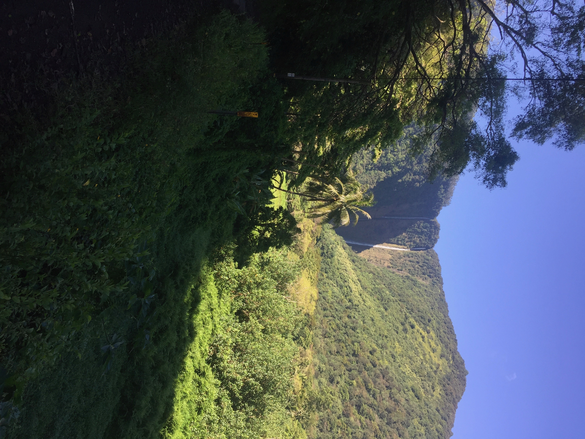
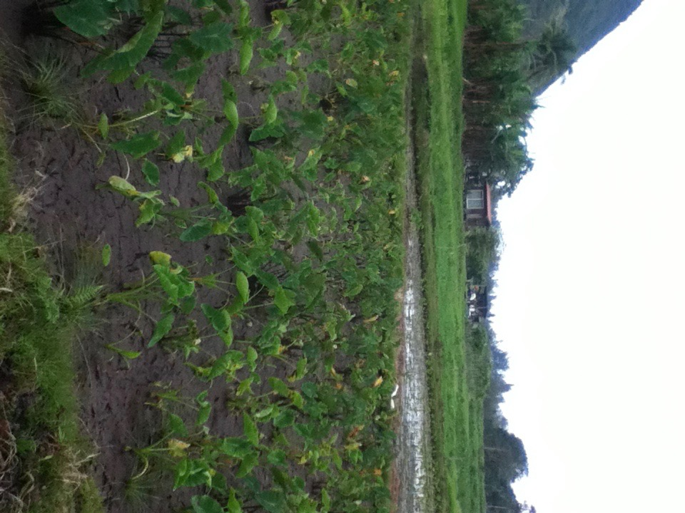
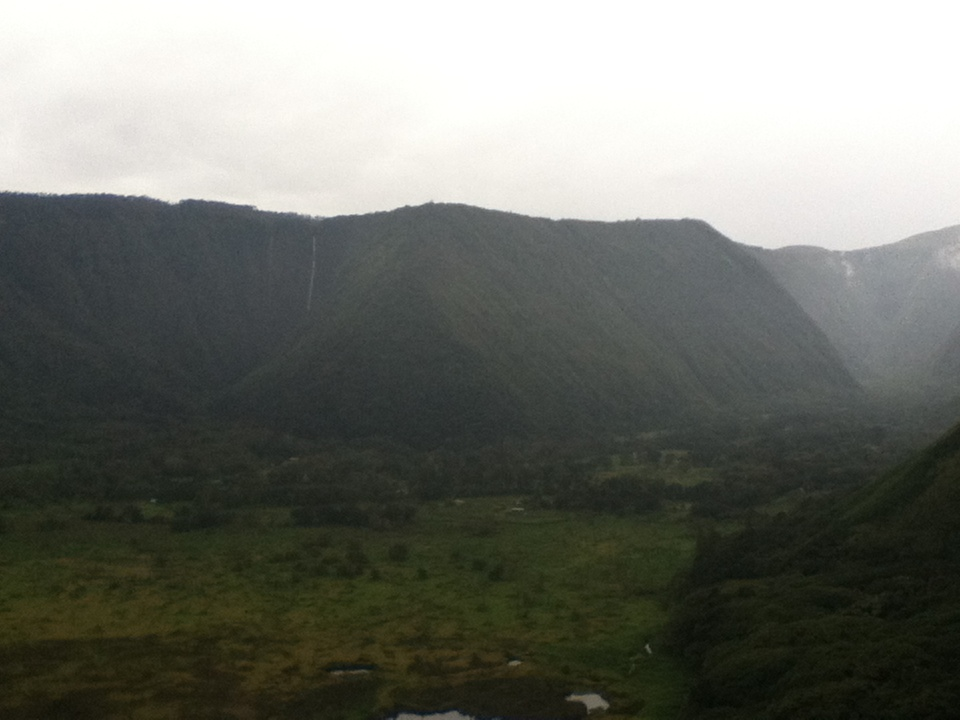
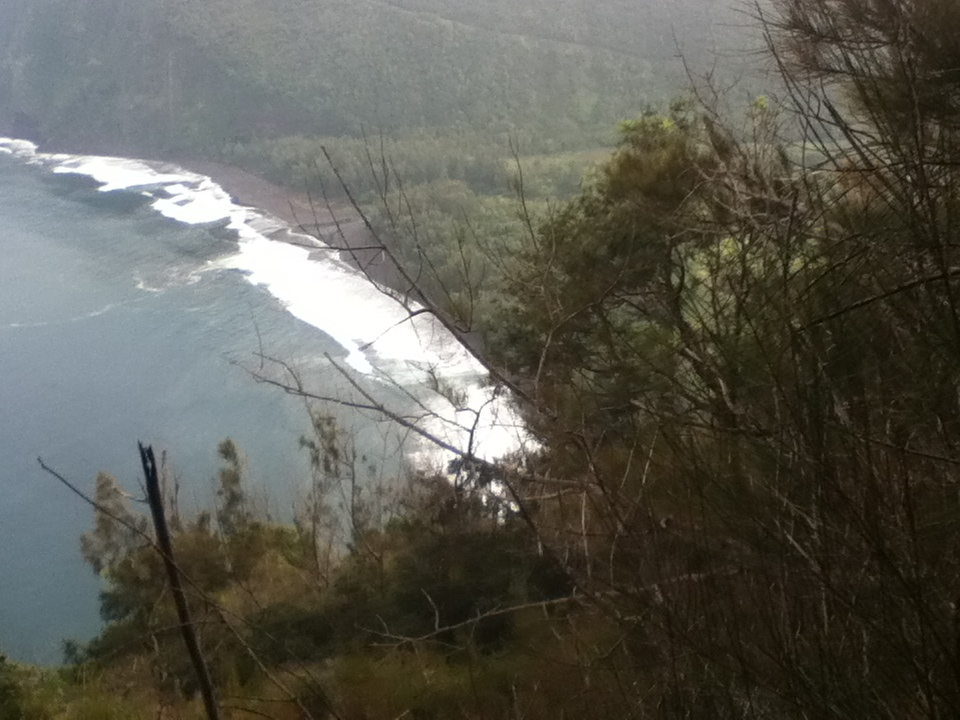

WAIPIO VALLEY INFORMATION
The View from the Waipiʻo Valley Lookout Waterfalls at the back of Waipiʻo Valley Waipiʻo Valley is a valley located in the Hamakua District of the Big Island of Hawaiʻi. "Waipiʻo" means "curved water" in the Hawaiian language.[1]  It was the capital and permanent residence of many early Hawaiian aliʻi (kings) up until the time of King ʻUmi. A place celebrated for its nioi tree (Eugenia reinwardtiana) known as the "Nioi wela o Paʻakalana" (The burning Nioi of Paʻakalana). It was the location of the ancient grass palace of the ancient kings of Hawaii with the nioi stands. Kahekili II raided Waipiʻo in the 18th century and burned the four sacred trees to the ground.  The valley floor at sea level is almost 2,000 ft (610 m) below the surrounding terrain. A steep road leads down into the valley from a lookout point located on the top of the southern wall of the valley. The road gains 800 vertical feet (243.84 m) in 0.6 miles (0.9 km) at a 25% average grade, with steeper grades in sections. This is a paved public road but it is open only to 4 wheel drive vehicles. It is the steepest road of its length in the United States [2] and possibly the world. The shore line in the valley is a black sand beach, popular with surfers. A few taro farms are located in the valley. Several large waterfalls fall into the valley to feed the river which flows from the foot of the largest falls at the back of the valley out to the ocean.[3]  A foot trail called Waimanu or Muliwai Trail leads down a steep path to the Waimanu Valley, which is not accessible by automobile. At upper end of the valley, Waimanu Gap at 2,089 feet (637 m) elevation leads to the south end of Waimanu Valley.[4]
Black sand is sand that is black in color. One type of black sand is a heavy, glossy, partly magnetic mixture of usually fine sands, found as part of a placer deposit. Another type of black sand, found on beaches near a volcano, consists of tiny fragments of basalt.  While some beaches are predominantly made of black sand, even other colour beaches (e.g. gold and white) can often have deposits of black sand, particularly after storms. Larger waves can sort out sand grains leaving deposits of heavy minerals visible on the surface of erosion scarps.
Hāmākua's coast is approximately 50 miles (80 km) long, along the Pacific Ocean around 19°59′36″N 155°14′25″WCoordinates: 19°59′36″N 155°14′25″W, ending at Waipiʻo Valley and the uninhabited Waimanu Valley. The term Hāmākua Coast is used loosely to describe the region between Hilo and Waipiʻo, although the modern Hāmākua zoning district begins north of Laupāhoehoe and west of ʻŌʻōkala.[1][2] The rainfall due to the prevailing northeasterly tropical trade winds produces steep erosional valleys and cliffs, showing evidence of frequent landslides.[3] The lush vegetation and lack of sandy beaches contrasts sharply with other regions of the island.[4]
 Hamakua Coast north of Honoka'a town.
The dominating geographic feature in Hāmākua is the volcanic mountain Mauna Kea. The district stretches south through the central plateau to the summit of Mauna Loa.[5] Hāmākua was one of the six traditional districts of the island in ancient Hawaii (known as moku).[6] To the north beyond Waipiʻo Valley is the Kohala district, with the older volcano Kohala mountain. According to Hui Mālama i ke Ala ʻŪlili, Hāmākua is known for its "steep mountain trails."[7]
Hamakua Coast north of Honoka'a town.
The dominating geographic feature in Hāmākua is the volcanic mountain Mauna Kea. The district stretches south through the central plateau to the summit of Mauna Loa.[5] Hāmākua was one of the six traditional districts of the island in ancient Hawaii (known as moku).[6] To the north beyond Waipiʻo Valley is the Kohala district, with the older volcano Kohala mountain. According to Hui Mālama i ke Ala ʻŪlili, Hāmākua is known for its "steep mountain trails."[7]